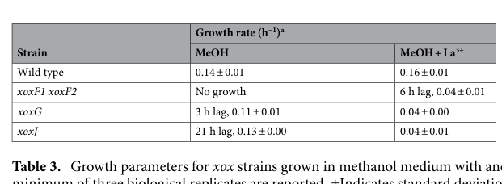

xoxJ encodes a periplasmic binding protein that plays a critical role in the activation of XoxF, the lanthanide-dependent methanol dehydrogenase. The protein is part of the xox1 operon alongside xoxF (Ln-MDH) and xoxG (cytochrome c_L electron acceptor). XoxJ contains an N-terminal signal peptide (residues 1-26) targeting it to the periplasm, where it functions in enabling XoxF to catalyze methanol oxidation. The crystal structure (PDB: 6ONP, 2.27 Å resolution) reveals a large hydrophobic cleft characteristic of the periplasmic binding protein family, suggesting a role in substrate or cofactor binding. By analogy to MxaJ in the Ca-dependent system, where deletion disrupts MDH activation, XoxJ is hypothesized to facilitate the incorporation of PQQ and/or lanthanide cofactors into XoxF, or to maintain XoxF in a catalytically competent conformation. The protein contains a conserved disulfide bond (Cys41-Cys94) and belongs to solute-binding protein family 3. Genetic evidence is strong: deletion of xoxJ in M. extorquens AM1 phenocopies loss of both xoxF1 and xoxF2 under lanthanum, establishing that XoxJ is essential for XoxF-dependent methanol oxidation, with a phenotype that persists even without lanthanum and is independent of mxa promoter regulation (Roszczenko-Jasinska et al. 2020). The leading mechanistic model from the crystal structure is a chaperone-like activation in which XoxJ binds a hydrophobic region of partially folded apo-XoxF to aid cofactor insertion/maturation; notably a specific PQQ-chaperone role was tested but NOT supported biochemically, so the exact ligand and mechanism remain a structure-informed hypothesis. While XoxJ's precise substrate and mechanism remain under investigation, it is essential for proper functioning of the lanthanide-dependent methanol oxidation system in the periplasm.
Definition: Binds to and increases the activity of a methanol dehydrogenase, an enzyme that catalyzes the oxidation of methanol to formaldehyde. This activity involves promoting the incorporation and/or proper positioning of the PQQ cofactor and metal ion cofactor (calcium or lanthanide) into the methanol dehydrogenase active site.
Justification: There is currently no specific GO term for methanol dehydrogenase activator activity. XoxJ and its homolog MxaJ represent well-characterized examples of proteins with this specific molecular function. The term would be useful for annotating accessory proteins in both lanthanide-dependent (XoxJ) and calcium-dependent (MxaJ) methanol dehydrogenase systems, as demonstrated by evidence that deletion of mxaJ disrupts activation of Ca-MDH.
Parent term: enzyme activator activity
| GO Term | Evidence | Action | Reason |
|---|---|---|---|
|
GO:0008047
enzyme activator activity
|
IEA | NEW |
Summary: XoxJ functions as an activator of the lanthanide-dependent methanol dehydrogenase XoxF
Reason: XoxJ is required for activation of XoxF, supported by strong genetic evidence: deletion of xoxJ phenocopies loss of both xoxF1 and xoxF2 on methanol + La3+, establishing genetic necessity for XoxF-dependent methanol oxidation (Roszczenko-Jasinska et al. 2020, PMID:32728125). The enzyme activator activity term is more specific and accurate than generic "binding" for describing XoxJ's molecular function. The leading mechanistic model from the crystal structure (Featherston et al. 2019, PMID:31017712) is a chaperone-like activation in which XoxJ binds a hydrophobic region of partially folded apo-XoxF to facilitate cofactor insertion/maturation; a specific PQQ-chaperone role was tested but NOT supported biochemically, so the precise ligand remains a structure-informed hypothesis rather than a proven activity.
Supporting Evidence:
PMID:31017712
the x-ray crystal structure of XoxJ reveals a large hydrophobic cleft and suggests a role in activation of XoxF...By extension, we presume that XoxJ plays an analogous role in Ln-MDH activation...Deletion of mxaJ disrupts activation of the Ca-MDH
file:METEA/xoxJ/xoxJ-deep-research-falcon.md
In **methanol + La3+** medium, **loss of xoxJ** is reported as **equivalent to loss of both xoxF1 and xoxF2**, supporting that XoxJ is **essential for XoxF-dependent methanol oxidation**
file:METEA/xoxJ/xoxJ-deep-research-falcon.md
considered a **PQQ-chaperone** role but report that their biochemical tests did **not support** that specific hypothesis
|
|
GO:0030288
outer membrane-bounded periplasmic space
|
IEA | NEW |
Summary: XoxJ localizes to the periplasm via an N-terminal signal peptide
Reason: XoxJ contains an N-terminal signal peptide (residues 1-26) that targets it to the periplasm, where it functions in the lanthanide-dependent methanol oxidation system alongside XoxF and XoxG. The protein was experimentally purified from the periplasm and crystallized, confirming periplasmic localization (Featherston et al. 2019, PMID:31017712).
Supporting Evidence:
file:METEA/xoxJ/xoxJ-uniprot.txt
SIGNAL 1..26
PMID:31017712
XoxJ (a periplasmic binding protein of unknown function)
file:METEA/xoxJ/xoxJ-deep-research-falcon.md
XoxJ was expressed in *E. coli*, purified from the periplasm, and crystallized at 2.27 Å
|
|
GO:0006730
one-carbon metabolic process
|
IEA | NEW |
Summary: XoxJ is required for activation of the lanthanide-dependent methanol dehydrogenase in one-carbon metabolism
Reason: XoxJ is required for XoxF-dependent methanol oxidation, the first step of periplasmic one-carbon (methanol) metabolism that oxidizes methanol to formaldehyde. Genetic evidence shows ΔxoxJ severely impairs growth on methanol + La3+ (0.04 h-1 vs wild-type 0.16 h-1) and even imposes a lag in the absence of lanthanum, and reporter fusions ruled out indirect Ln-switch regulation, supporting a direct auxiliary role in periplasmic methanol oxidation physiology (Roszczenko-Jasinska et al. 2020, PMID:32728125).
Supporting Evidence:
PMID:31017712
By extension, we presume that XoxJ plays an analogous role in Ln-MDH activation...Deletion of mxaJ disrupts activation of the Ca-MDH
file:METEA/xoxJ/xoxJ-deep-research-falcon.md
the growth phenotypes of **xoxG** and **xoxJ** mutants in the absence of La3+ were **not due to impaired expression from the mxa promoter**
|
Q: What is the natural substrate or cofactor that binds in the hydrophobic cleft of XoxJ? Is it PQQ, a lanthanide ion, or an unknown small molecule?
Suggested experts: Nathan C. Martinez-Gomez (expert on lanthanide-dependent methanol metabolism), Victor L. Davidson (expert on PQQ biochemistry)
Q: Does XoxJ function as a metallochaperone delivering lanthanides to XoxF, a PQQ insertase, or does it have a different role in XoxF maturation?
Suggested experts: Elizabeth Skovran (expert on M. extorquens AM1 and lanthanide metabolism), Christopher Anthony (expert on methanol dehydrogenase cofactor incorporation)
Q: What is the evolutionary relationship between XoxJ and MxaJ? Did they evolve from a common ancestor or through convergent evolution to serve analogous functions?
Suggested experts: Ludmila Chistoserdova (expert on methylotroph evolution), Mary E. Lidstrom (expert on methylotrophy)
Q: Is XoxJ conserved across all bacteria with lanthanide-dependent XoxF enzymes, or are there alternative activation mechanisms in some species?
Suggested experts: Nathan C. Martinez-Gomez, Ludmila Chistoserdova
Q: Can the activation mechanism elucidated for XoxJ/XoxF be generalized to understand how other PQQ-dependent dehydrogenases acquire their cofactors?
Suggested experts: Victor L. Davidson, Christopher Anthony
Experiment: Co-crystallize XoxJ with potential substrates or cofactors (PQQ, lanthanides, small molecules) to identify its binding partner and elucidate the molecular basis of XoxF activation.
Hypothesis: XoxJ binds PQQ or lanthanide ions (or both) in its hydrophobic cleft and delivers them to apo-XoxF during enzyme maturation, with structural changes in XoxJ upon ligand binding revealing the activation mechanism.
Type: structural biology
Experiment: Perform in vitro reconstitution of XoxF activity from apo-XoxF, measuring the effect of purified XoxJ on the incorporation of PQQ and lanthanide cofactors and resulting catalytic activity.
Hypothesis: XoxJ accelerates or is required for proper assembly of holo-XoxF from apo-XoxF in vitro, demonstrating its chaperone or cofactor delivery function directly.
Type: biochemical assay
Experiment: Use isothermal titration calorimetry (ITC) and surface plasmon resonance (SPR) to measure binding affinities between XoxJ and potential ligands (PQQ, La³⁺, Ce³⁺, other lanthanides) and between XoxJ and apo-XoxF or holo-XoxF.
Hypothesis: XoxJ binds cofactors with measurable affinity and shows differential binding to apo- versus holo-XoxF, indicating its role in the maturation process.
Type: biochemical assay
Experiment: Create site-directed mutants in the hydrophobic cleft of XoxJ and test their ability to complement xoxJ deletion mutants for growth on methanol with lanthanides, correlating structural changes with functional defects.
Hypothesis: Specific residues lining the hydrophobic cleft are essential for substrate/cofactor binding and XoxF activation, with mutations disrupting this interaction preventing XoxF function.
Type: genetic manipulation
Experiment: Use cross-linking mass spectrometry and hydrogen-deuterium exchange mass spectrometry (HDX-MS) to map XoxJ-XoxF interaction interfaces and conformational changes upon complex formation.
Hypothesis: XoxJ forms a transient complex with XoxF during activation, with specific protein-protein interaction sites and conformational changes that can be mapped to understand the activation mechanism.
Type: proteomics
The research report should be a detailed narrative explaining the function, biological processes, and localization of the gene product. Citations should be given for all claims.
You should prioritize authoritative reviews and primary scientific literature when conducting research. You can supplement
this with annotations you find in gene/protein databases, but these can be outdated or inaccurate.
We are specifically interested in the primary function of the gene - for enzymes, what reaction is catalyzed, and what is the substrate specificity? For transporters, what is the substrate? For structural proteins or adapters, what is the broader structural role? For signaling molecules, what is the role in the pathway.
We are interested in where in or outside the cell the gene product carries out its function.
We are also interested in the signaling or biochemical pathways in which the gene functions. We are less interested in broad pleiotropic effects, except where these elucidate the precise role.
Include evidence where possible. We are interested in both experimental evidence as well as inference from structure, evolution, or bioinformatic analysis. Precise studies should be prioritized over high-throughput, where available.
The target in scope is xoxJ from Methylorubrum extorquens strain AM1 (formerly Methylobacterium extorquens AM1), corresponding to locus MexAM1_META1p1742 and annotated as a periplasmic binding protein in the xox1 operon (xoxF1GJ), adjacent to xoxF1 (Ln-dependent methanol dehydrogenase) and xoxG (partner c-type cytochrome). This matches the UniProt description for C5B122 as a solute-binding/periplasmic-binding-protein family protein with relevant domains and a role linked to quinoprotein dehydrogenase systems. (roszczenkojasinska2020geneproductsand pages 5-6, roszczenkojasinska2020geneproductsand pages 4-5, featherston2019biochemicalandstructural pages 6-7)
M. extorquens AM1 contains both (i) a Ca2+-dependent methanol dehydrogenase system (MxaFI) and (ii) lanthanide (Ln3+)-dependent PQQ alcohol dehydrogenases, notably XoxF-type methanol dehydrogenases (XoxF1 and XoxF2). When lanthanides are available, expression shifts toward the xox1 operon (xoxF1GJ) and away from the mxa operon—this regulatory remodeling is widely referred to as the lanthanide switch / rare-earth switch. (roszczenkojasinska2020geneproductsand pages 4-5)
In methylotrophs, PQQ-ADHs are periplasmic enzymes that pass electrons to a partner c-type cytochrome (e.g., XoxG), supporting respiratory electron transport. In addition to the electron-accepting cytochrome (XoxG), xoxF or exaF clusters often encode homologs of mxaJ, including xoxJ, described as periplasmic binding proteins suggested to aid activation of PQQ-ADHs. (roszczenkojasinska2020geneproductsand pages 4-5)
XoxJ is best supported as a periplasmic accessory/activation factor (a periplasmic binding protein-like fold), not a catalytic enzyme. In AM1, xoxJ is explicitly annotated as a “Periplasmic binding protein” and is genetically coupled to lanthanide-dependent methanol oxidation via its colocalization with xoxF1 and xoxG (xoxF1GJ). (roszczenkojasinska2020geneproductsand pages 5-6, roszczenkojasinska2020geneproductsand pages 4-5)
A key mechanistic advance is the X-ray crystal structure of XoxJ from M. extorquens AM1. XoxJ is a periplasmic binding protein (PBP)-fold protein whose structure reveals a large hydrophobic cavity/cleft (reported central cavity ~1750 Å3) and disordered loops, consistent with binding a large hydrophobic partner rather than a small metabolite substrate. (featherston2019biochemicalandstructural pages 18-25)
Featherston et al. propose a chaperone-like activation model: XoxJ may bind a hydrophobic region of partially folded apo-XoxF to facilitate cofactor insertion and/or maturation of XoxF into the active holoenzyme, analogous to historic proposals for the Ca-MDH accessory protein MxaJ. Importantly, they considered a PQQ-chaperone role but report that their biochemical tests did not support that specific hypothesis, leaving “activation” as an assembly/maturation function supported primarily by structure-informed inference. (featherston2019biochemicalandstructural pages 10-12, featherston2019biochemicalandstructural pages 6-7)
Structural resources: PDB entries reported for this system include XoxJ: 6ONP and XoxG: 6ONQ. (featherston2019biochemicalandstructural pages 1-3)
Evidence in the retrieved full text supports that XoxJ is functionally linked to the XoxF/XoxG module (operon structure; mutant phenotypes), and the leading mechanistic hypothesis involves interaction with apo-XoxF during activation. However, direct binding measurements (e.g., XoxJ–XoxF affinity, direct PQQ binding, direct Ln binding) are not demonstrated in the excerpts retrieved here; thus, claims about a specific ligand (PQQ vs protein segment) remain model-based rather than experimentally proven in these texts. (featherston2019biochemicalandstructural pages 10-12, featherston2019biochemicalandstructural pages 6-7, featherston2019biochemicalandstructural pages 18-25)
Roszczenko-Jasińska et al. (2020) identified xoxJ (MexAM1_META1p1742) multiple times in a transposon screen designed to find genes required for XoxF-dependent methanol oxidation. (roszczenkojasinska2020geneproductsand pages 5-6)
Critically, ΔxoxJ produces a strong phenotype during growth on methanol:
- In methanol + La3+ medium, loss of xoxJ is reported as equivalent to loss of both xoxF1 and xoxF2, supporting that XoxJ is essential for XoxF-dependent methanol oxidation. (roszczenkojasinska2020geneproductsand pages 5-6)
- Quantitatively, Table 3 shows:
- Wild type: 0.16 ± 0.01 h−1 (MeOH + La3+)
- ΔxoxJ: 0.04 ± 0.01 h−1 (MeOH + La3+)
- ΔxoxJ also has a phenotype without La3+: 21 h lag, growth rate 0.13 h−1 on MeOH (vs wild type 0.14 ± 0.01 h−1), indicating an effect even in Ln-absent conditions. (roszczenkojasinska2020geneproductsand pages 6-7)
These quantitative phenotypes are also captured in the extracted visual evidence (Table 3 / Figure 3). (roszczenkojasinska2020geneproductsand media 78813729, roszczenkojasinska2020geneproductsand media 00cde554)
In AM1, reporter-fusion experiments showed that the growth phenotypes of xoxG and xoxJ mutants in the absence of La3+ were not due to impaired expression from the mxa promoter. This argues against a model where XoxJ only affects methanol growth indirectly through Ln-switch regulation, and supports a more direct/auxiliary role in periplasmic methanol oxidation physiology. (roszczenkojasinska2020geneproductsand pages 6-7, roszczenkojasinska2020geneproductsand pages 5-6)
In M. extorquens PA1, a ΔxoxGJ strain shows a strong growth defect in the presence of La3+ while growing normally without La3+, reinforcing that the Xox accessory module (including XoxJ) is specifically critical to the REE-dependent methanol growth state. (ochsner2019useofrare‐earth pages 9-10)
Multiple lines of evidence place XoxJ in the periplasm:
- AM1 annotation explicitly labels xoxJ as a periplasmic binding protein. (roszczenkojasinska2020geneproductsand pages 5-6)
- Structural/biochemical work purified XoxJ from the periplasm in an expression system and solved the structure consistent with a periplasmic binding protein fold. (featherston2019biochemicalandstructural pages 6-7)
The xoxF1GJ operon encodes a periplasmic methanol oxidation system: XoxF (PQQ-ADH) plus its electron acceptor XoxG (c-type cytochrome) and accessory factor XoxJ. In this system, XoxG is the physiological electron acceptor for XoxF. (roszczenkojasinska2020geneproductsand pages 4-5, featherston2019biochemicalandstructural pages 1-3)
A quantitative biochemical insight relevant to module function (though not specific to XoxJ catalysis) is that when XoxF is assayed with its physiological acceptor XoxG, Vmax is reported as broadly Ln-independent (La/Ce/Nd), but the apparent Km for XoxG increases across the Ln series from La to Nd, suggesting tuning/compatibility effects in the electron transfer partner interaction. (featherston2019biochemicalandstructural pages 9-10, featherston2019biochemicalandstructural pages 3-4)
Direct 2023–2024 experimental papers specifically dissecting XoxJ in AM1 were not retrieved in this run; however, multiple high-quality 2023–2024 studies substantially advance the system-level understanding of lanthanide-dependent methylotrophy and its applications, which frames current interpretation of xoxJ.
A 2024 metagenomic study of weathered granites and soils reconstructed 136 genomes (11 bacterial phyla) and found lanthanide-dependent PQQ-ADH systems to be common. In quantitative terms, dereplication of PQQ-ADH sequences yielded 411 distinct sequences, all XoxF types; XoxF3 dominated (340 sequences) with XoxF5 next (63); notably, no mxaF was detected in these datasets. This supports the view that xox-associated systems (including accessory genes like xoxG and sometimes xoxJ) are major players in real environments where lanthanides are often mineral-bound and poorly soluble. (voutsinos2024weatheredgranitesand pages 2-4)
In a lanthanide-accumulating methylotroph (Beijerinckiaceae bacterium RH AL1), RNA-seq showed that varying La concentration (50 nM vs 1 µM) or changing Ln identity (La vs Nd vs Ln cocktail) can cause extremely broad transcriptional remodeling: up to 41% of encoded genes were differentially expressed. This supports a modern view that Ln are not merely enzyme cofactors but also major physiological regulators, and it helps explain why accessory proteins and uptake/trafficking networks are under strong selection and regulation in Ln-dependent methylotrophs. (gorniak2023differentlanthanideelements pages 1-2)
Two 2024 directions illustrate real-world implementations arising from Ln biology:
- Protein-based lanthanide separation: a 2024 PNAS study reports structural characterization of a bacterial lanthanide uptake-associated chaperone (LanD) and positions engineered protein interfaces as a strategy for separating adjacent light lanthanides; multiple LanD structures were deposited to the PDB (June 13, 2024). While not about xoxJ directly, this is a concrete translation pathway from Ln-dependent methylotroph biology into separations technology. (larrinaga2024modulatingmetalcentereddimerization pages 8-8)
- Artificial metalloenzyme platforms: a 2024 PNAS study describes a biomimetic La3+-PQQ artificial metalloprotein as a platform for mechanistic interrogation of rare-earth PQQ-ADHs; the work explicitly frames XoxJ and XoxG as accessory proteins in natural Xox systems, motivating simplified engineered surrogates. (thompson2024structuredrivendevelopmentof; retrieved but not fully evidenced in excerpts here)
Across genetic and structural studies, the prevailing expert interpretation is that XoxJ is an accessory activation factor required for the functional expression of lanthanide-dependent methanol oxidation, with an as-yet incompletely defined molecular mechanism. The strongest direct evidence is genetic necessity (phenocopy of xoxF1/xoxF2 loss under Ln conditions) combined with structure-informed hypotheses about apo-enzyme maturation. (roszczenkojasinska2020geneproductsand pages 5-6, featherston2019biochemicalandstructural pages 10-12)
Recommended annotation (evidence-weighted):
- Protein type: Periplasmic binding protein-like accessory factor (PBP fold). (roszczenkojasinska2020geneproductsand pages 5-6, featherston2019biochemicalandstructural pages 6-7)
- Primary biological role: Required for lanthanide-dependent methanol growth and XoxF-dependent methanol oxidation, likely by enabling activation/maturation of XoxF in the periplasm (assembly/cofactor insertion chaperone-like function). (roszczenkojasinska2020geneproductsand pages 5-6, featherston2019biochemicalandstructural pages 10-12)
- Localization: Periplasm. (roszczenkojasinska2020geneproductsand pages 5-6, featherston2019biochemicalandstructural pages 6-7)
- Pathway context: xoxF1GJ module within lanthanide-dependent methylotrophy; interfaces with electron transfer via XoxG. (roszczenkojasinska2020geneproductsand pages 4-5, featherston2019biochemicalandstructural pages 1-3)
| Claim/annotation | Evidence type (genetic/biochemical/structural) | Key findings | Source (authors, year, journal) | DOI/URL | Context ID(s) |
|---|---|---|---|---|---|
| xoxJ (MexAM1_META1p1742; UniProt C5B122) in Methylorubrum extorquens AM1 is annotated as a periplasmic binding protein | Genetic/genome annotation | Identified in transposon screen; Table 1 annotates xoxJ as “Periplasmic binding protein.” XoxJ is described as a homolog of MxaJ, part of xox/exa systems associated with periplasmic PQQ-ADHs | Roszczenko-Jasińska et al., 2020, Scientific Reports | https://doi.org/10.1038/s41598-020-69401-4 | (roszczenkojasinska2020geneproductsand pages 5-6, roszczenkojasinska2020geneproductsand pages 4-5) |
| xoxJ is genomically linked to the lanthanide-dependent MDH system | Genetic/genomic context | xoxJ lies adjacent to xoxG and xoxF1 in the xox1 operon (xoxF1GJ), supporting functional coupling to Ln-dependent methanol oxidation and the Ln-switch | Roszczenko-Jasińska et al., 2020, Scientific Reports | https://doi.org/10.1038/s41598-020-69401-4 | (roszczenkojasinska2020geneproductsand pages 4-5) |
| XoxJ is a periplasmic protein with a canonical periplasmic binding protein fold | Structural/biochemical | XoxJ was expressed in E. coli, purified from the periplasm, and crystallized at 2.27 Å; structure shows the characteristic two-domain PBP fold with a putative substrate-binding cavity | Featherston et al., 2019, ChemBioChem | https://doi.org/10.1002/cbic.201900184 | (featherston2019biochemicalandstructural pages 6-7) |
| XoxJ has distinctive structural features consistent with an accessory/chaperone role rather than transport | Structural | Crystal structure reveals a large hydrophobic cleft/cavity; central cavity reported as ~1750 ų, surrounded by disordered loops. PDB depositions: XoxJ 6ONP; XoxG 6ONQ | Featherston et al., 2019, ChemBioChem | https://doi.org/10.1002/cbic.201900184 | (featherston2019biochemicalandstructural pages 18-25, featherston2019biochemicalandstructural pages 1-3) |
| XoxJ is not supported as a PQQ chaperone by available biochemical tests | Biochemical/structural inference | Authors considered XoxJ as a possible PQQ chaperone, but biochemical data did not support that specific role | Featherston et al., 2019, ChemBioChem | https://doi.org/10.1002/cbic.201900184 | (featherston2019biochemicalandstructural pages 10-12, featherston2019biochemicalandstructural pages 9-10) |
| Current best mechanistic model is that XoxJ helps activate apo-XoxF during assembly/cofactor insertion | Structural/mechanistic inference | Large hydrophobic cleft and similarity to MxaJ suggest XoxJ binds a hydrophobic region of partially folded apo-XoxF, helping cofactor insertion/activation; holo-XoxF is dimeric whereas PQQ loss causes monomerization, supporting a role in maturation rather than catalysis | Featherston et al., 2019, ChemBioChem; Pastawan et al., 2020, Reviews in Agricultural Science | https://doi.org/10.1002/cbic.201900184; https://doi.org/10.7831/ras.8.0_186 | (featherston2019biochemicalandstructural pages 10-12, featherston2019biochemicalandstructural pages 6-7) |
| xoxJ is required for normal lanthanide-dependent methanol growth in AM1 | Genetic/physiological | In methanol + La³⁺ medium, loss of xoxJ was “equivalent to loss of both xoxF1 and xoxF2,” supporting that XoxJ is essential for XoxF-dependent methanol oxidation | Roszczenko-Jasińska et al., 2020, Scientific Reports | https://doi.org/10.1038/s41598-020-69401-4 | (roszczenkojasinska2020geneproductsand pages 5-6) |
| Quantitative phenotype of ΔxoxJ in AM1 without lanthanum | Genetic/physiological | On methanol without La³⁺, ΔxoxJ showed a 21 h lag and growth rate 0.13 h⁻¹; wild type grew at 0.14 ± 0.01 h⁻¹. This indicates a phenotype even when La³⁺ is absent | Roszczenko-Jasińska et al., 2020, Scientific Reports | https://doi.org/10.1038/s41598-020-69401-4 | (roszczenkojasinska2020geneproductsand pages 6-7) |
| Quantitative phenotype of ΔxoxJ in AM1 with lanthanum | Genetic/physiological | On methanol + La³⁺, ΔxoxJ grew at 0.04 ± 0.01 h⁻¹ versus wild type 0.16 ± 0.01 h⁻¹, matching the severe defect of the xoxF1 xoxF2 mutant in La³⁺ medium | Roszczenko-Jasińska et al., 2020, Scientific Reports | https://doi.org/10.1038/s41598-020-69401-4 | (roszczenkojasinska2020geneproductsand pages 6-7, roszczenkojasinska2020geneproductsand pages 5-6, roszczenkojasinska2020geneproductsand media 78813729, roszczenkojasinska2020geneproductsand media 00cde554) |
| xoxJ mutant phenotypes are not explained simply by failed mxa induction | Genetic/regulatory | Reporter fusions showed the ΔxoxJ growth defect in the absence of La³⁺ was not due to impaired mxa promoter expression, implying XoxJ may have a broader/direct role in methanol metabolism beyond Ln-switch regulation | Roszczenko-Jasińska et al., 2020, Scientific Reports | https://doi.org/10.1038/s41598-020-69401-4 | (roszczenkojasinska2020geneproductsand pages 6-7, roszczenkojasinska2020geneproductsand pages 5-6) |
| Independent preprint evidence also linked XoxJ to XoxF activity | Genetic/inference | Deletion of xoxJ reportedly mirrored the xoxF1 xoxF2 double mutant; authors interpreted this as consistent with XoxJ interacting with and possibly activating XoxF | Roszczenko-Jasińska et al., 2019, bioRxiv | https://doi.org/10.1101/647677 | (roszczenkojasinska2019lanthanidetransportstorage pages 15-18) |
| Related strain PA1 shows a severe La-dependent phenotype when xoxGJ are deleted | Genetic/physiological | In M. extorquens PA1, a ΔxoxGJ strain grew normally without La³⁺ but had a strong growth defect in the presence of La³⁺, reinforcing the requirement of XoxG/J for REE-dependent methanol metabolism | Ochsner et al., 2019, Molecular Microbiology | https://doi.org/10.1111/mmi.14208 | (ochsner2019useofrare‐earth pages 9-10) |
| XoxG is the physiological electron acceptor paired with XoxF; this informs the XoxJ/XoxFGJ system | Biochemical/structural | XoxG is a c-type cytochrome serving as XoxF’s physiological electron acceptor; XoxF activity with La³⁺, Ce³⁺, and Nd³⁺ is similar in Vmax when assayed with XoxG, indicating the accessory system supports multiple light Ln cofactors | Featherston et al., 2019, ChemBioChem | https://doi.org/10.1002/cbic.201900184 | (featherston2019biochemicalandstructural pages 9-10, featherston2019biochemicalandstructural pages 1-3) |
| XoxG has a low reduction potential tuned for the XoxF system | Biochemical/structural | XoxG has an unusually low midpoint reduction potential of about +172 mV; structural analysis attributes this to a distinctive, relatively solvent-exposed heme environment | Featherston et al., 2019, ChemBioChem | https://doi.org/10.1002/cbic.201900184 | (featherston2019biochemicalandstructural pages 9-10, featherston2019biochemicalandstructural pages 1-3) |
| Ln-dependent changes in apparent Km for XoxG suggest co-adaptation within the XoxFGJ system | Biochemical/kinetic | With XoxG as electron acceptor, XoxF Vmax values were not significantly different across La/Ce/Nd, but apparent Km for XoxG increased markedly from La to Nd; a predicted ~10 μM Km was noted for Sm-XoxF, supporting tuning of the XoxF–XoxG pair to lighter lanthanides | Featherston et al., 2019, ChemBioChem | https://doi.org/10.1002/cbic.201900184 | (featherston2019biochemicalandstructural pages 9-10, featherston2019biochemicalandstructural pages 3-4) |
Table: This table summarizes the strongest available evidence for functional annotation of xoxJ (UniProt C5B122) in Methylorubrum extorquens AM1, integrating genetic, biochemical, and structural data. It highlights what is directly supported experimentally versus what remains mechanistic inference, which is useful for cautious gene/protein annotation.
References
(roszczenkojasinska2020geneproductsand pages 5-6): Paula Roszczenko-Jasińska, Huong N. Vu, Gabriel A. Subuyuj, Ralph Valentine Crisostomo, James Cai, Nicholas F. Lien, Erik J. Clippard, Elena M. Ayala, Richard T. Ngo, Fauna Yarza, Justin P. Wingett, Charumathi Raghuraman, Caitlin A. Hoeber, Norma C. Martinez-Gomez, and Elizabeth Skovran. Gene products and processes contributing to lanthanide homeostasis and methanol metabolism in methylorubrum extorquens am1. Scientific Reports, Jul 2020. URL: https://doi.org/10.1038/s41598-020-69401-4, doi:10.1038/s41598-020-69401-4. This article has 92 citations and is from a peer-reviewed journal.
(roszczenkojasinska2020geneproductsand pages 4-5): Paula Roszczenko-Jasińska, Huong N. Vu, Gabriel A. Subuyuj, Ralph Valentine Crisostomo, James Cai, Nicholas F. Lien, Erik J. Clippard, Elena M. Ayala, Richard T. Ngo, Fauna Yarza, Justin P. Wingett, Charumathi Raghuraman, Caitlin A. Hoeber, Norma C. Martinez-Gomez, and Elizabeth Skovran. Gene products and processes contributing to lanthanide homeostasis and methanol metabolism in methylorubrum extorquens am1. Scientific Reports, Jul 2020. URL: https://doi.org/10.1038/s41598-020-69401-4, doi:10.1038/s41598-020-69401-4. This article has 92 citations and is from a peer-reviewed journal.
(featherston2019biochemicalandstructural pages 6-7): Emily R. Featherston, Hannah R. Rose, Molly J. McBride, Ellison M. Taylor, Amie K. Boal, and Joseph A. Cotruvo. Biochemical and structural characterization of xoxg and xoxj and their roles in lanthanide‐dependent methanol dehydrogenase activity. ChemBioChem, 20:2360-2372, Sep 2019. URL: https://doi.org/10.1002/cbic.201900184, doi:10.1002/cbic.201900184. This article has 55 citations and is from a peer-reviewed journal.
(featherston2019biochemicalandstructural pages 18-25): Emily R. Featherston, Hannah R. Rose, Molly J. McBride, Ellison M. Taylor, Amie K. Boal, and Joseph A. Cotruvo. Biochemical and structural characterization of xoxg and xoxj and their roles in lanthanide‐dependent methanol dehydrogenase activity. ChemBioChem, 20:2360-2372, Sep 2019. URL: https://doi.org/10.1002/cbic.201900184, doi:10.1002/cbic.201900184. This article has 55 citations and is from a peer-reviewed journal.
(featherston2019biochemicalandstructural pages 10-12): Emily R. Featherston, Hannah R. Rose, Molly J. McBride, Ellison M. Taylor, Amie K. Boal, and Joseph A. Cotruvo. Biochemical and structural characterization of xoxg and xoxj and their roles in lanthanide‐dependent methanol dehydrogenase activity. ChemBioChem, 20:2360-2372, Sep 2019. URL: https://doi.org/10.1002/cbic.201900184, doi:10.1002/cbic.201900184. This article has 55 citations and is from a peer-reviewed journal.
(featherston2019biochemicalandstructural pages 1-3): Emily R. Featherston, Hannah R. Rose, Molly J. McBride, Ellison M. Taylor, Amie K. Boal, and Joseph A. Cotruvo. Biochemical and structural characterization of xoxg and xoxj and their roles in lanthanide‐dependent methanol dehydrogenase activity. ChemBioChem, 20:2360-2372, Sep 2019. URL: https://doi.org/10.1002/cbic.201900184, doi:10.1002/cbic.201900184. This article has 55 citations and is from a peer-reviewed journal.
(roszczenkojasinska2020geneproductsand pages 6-7): Paula Roszczenko-Jasińska, Huong N. Vu, Gabriel A. Subuyuj, Ralph Valentine Crisostomo, James Cai, Nicholas F. Lien, Erik J. Clippard, Elena M. Ayala, Richard T. Ngo, Fauna Yarza, Justin P. Wingett, Charumathi Raghuraman, Caitlin A. Hoeber, Norma C. Martinez-Gomez, and Elizabeth Skovran. Gene products and processes contributing to lanthanide homeostasis and methanol metabolism in methylorubrum extorquens am1. Scientific Reports, Jul 2020. URL: https://doi.org/10.1038/s41598-020-69401-4, doi:10.1038/s41598-020-69401-4. This article has 92 citations and is from a peer-reviewed journal.
(roszczenkojasinska2020geneproductsand media 78813729): Paula Roszczenko-Jasińska, Huong N. Vu, Gabriel A. Subuyuj, Ralph Valentine Crisostomo, James Cai, Nicholas F. Lien, Erik J. Clippard, Elena M. Ayala, Richard T. Ngo, Fauna Yarza, Justin P. Wingett, Charumathi Raghuraman, Caitlin A. Hoeber, Norma C. Martinez-Gomez, and Elizabeth Skovran. Gene products and processes contributing to lanthanide homeostasis and methanol metabolism in methylorubrum extorquens am1. Scientific Reports, Jul 2020. URL: https://doi.org/10.1038/s41598-020-69401-4, doi:10.1038/s41598-020-69401-4. This article has 92 citations and is from a peer-reviewed journal.
(roszczenkojasinska2020geneproductsand media 00cde554): Paula Roszczenko-Jasińska, Huong N. Vu, Gabriel A. Subuyuj, Ralph Valentine Crisostomo, James Cai, Nicholas F. Lien, Erik J. Clippard, Elena M. Ayala, Richard T. Ngo, Fauna Yarza, Justin P. Wingett, Charumathi Raghuraman, Caitlin A. Hoeber, Norma C. Martinez-Gomez, and Elizabeth Skovran. Gene products and processes contributing to lanthanide homeostasis and methanol metabolism in methylorubrum extorquens am1. Scientific Reports, Jul 2020. URL: https://doi.org/10.1038/s41598-020-69401-4, doi:10.1038/s41598-020-69401-4. This article has 92 citations and is from a peer-reviewed journal.
(ochsner2019useofrare‐earth pages 9-10): Andrea M. Ochsner, Lucas Hemmerle, Thomas Vonderach, Ralph Nüssli, Miriam Bortfeld‐Miller, Bodo Hattendorf, and Julia A. Vorholt. Use of rare‐earth elements in the phyllosphere colonizer methylobacterium extorquens pa1. Molecular Microbiology, 111:1152-1166, Feb 2019. URL: https://doi.org/10.1111/mmi.14208, doi:10.1111/mmi.14208. This article has 145 citations and is from a domain leading peer-reviewed journal.
(featherston2019biochemicalandstructural pages 9-10): Emily R. Featherston, Hannah R. Rose, Molly J. McBride, Ellison M. Taylor, Amie K. Boal, and Joseph A. Cotruvo. Biochemical and structural characterization of xoxg and xoxj and their roles in lanthanide‐dependent methanol dehydrogenase activity. ChemBioChem, 20:2360-2372, Sep 2019. URL: https://doi.org/10.1002/cbic.201900184, doi:10.1002/cbic.201900184. This article has 55 citations and is from a peer-reviewed journal.
(featherston2019biochemicalandstructural pages 3-4): Emily R. Featherston, Hannah R. Rose, Molly J. McBride, Ellison M. Taylor, Amie K. Boal, and Joseph A. Cotruvo. Biochemical and structural characterization of xoxg and xoxj and their roles in lanthanide‐dependent methanol dehydrogenase activity. ChemBioChem, 20:2360-2372, Sep 2019. URL: https://doi.org/10.1002/cbic.201900184, doi:10.1002/cbic.201900184. This article has 55 citations and is from a peer-reviewed journal.
(voutsinos2024weatheredgranitesand pages 2-4): Marcos Y. Voutsinos, Jacob A. West-Roberts, Rohan Sachdeva, John W. Moreau, and Jillian F. Banfield. Weathered granites and soils harbour microbes with lanthanide-dependent methylotrophic enzymes. BMC Biology, Feb 2024. URL: https://doi.org/10.1186/s12915-024-01841-0, doi:10.1186/s12915-024-01841-0. This article has 13 citations and is from a domain leading peer-reviewed journal.
(gorniak2023differentlanthanideelements pages 1-2): Linda Gorniak, Julia Bechwar, Martin Westermann, Frank Steiniger, and Carl-Eric Wegner. Different lanthanide elements induce strong gene expression changes in a lanthanide-accumulating methylotroph. Dec 2023. URL: https://doi.org/10.1128/spectrum.00867-23, doi:10.1128/spectrum.00867-23. This article has 17 citations and is from a domain leading peer-reviewed journal.
(larrinaga2024modulatingmetalcentereddimerization pages 8-8): Wyatt B. Larrinaga, Jonathan J. Jung, Chi-Yun Lin, Amie K. Boal, and Joseph A. Cotruvo. Modulating metal-centered dimerization of a lanthanide chaperone protein for separation of light lanthanides. Proceedings of the National Academy of Sciences of the United States of America, Oct 2024. URL: https://doi.org/10.1073/pnas.2410926121, doi:10.1073/pnas.2410926121. This article has 25 citations and is from a highest quality peer-reviewed journal.
(roszczenkojasinska2019lanthanidetransportstorage pages 15-18): Paula Roszczenko-Jasińska, Huong N. Vu, Gabriel A. Subuyuj, Ralph Valentine Crisostomo, Elena M. Ayala, James Cai, Nicholas F. Lien, Erik J. Clippard, Richard T. Ngo, Fauna Yarza, Justin P. Wingett, Charumathi Raghuraman, Caitlin A. Hoeber, Norma C. Martinez-Gomez, and Elizabeth Skovran. Lanthanide transport, storage, and beyond: genes and processes contributing to xoxf function in methylorubrum extorquens am1. bioRxiv, May 2019. URL: https://doi.org/10.1101/647677, doi:10.1101/647677. This article has 11 citations.
(gorniak2023differentlanthanideelements pages 12-14): Linda Gorniak, Julia Bechwar, Martin Westermann, Frank Steiniger, and Carl-Eric Wegner. Different lanthanide elements induce strong gene expression changes in a lanthanide-accumulating methylotroph. Dec 2023. URL: https://doi.org/10.1128/spectrum.00867-23, doi:10.1128/spectrum.00867-23. This article has 17 citations and is from a domain leading peer-reviewed journal.
(voutsinos2024weatheredgranitesand pages 1-2): Marcos Y. Voutsinos, Jacob A. West-Roberts, Rohan Sachdeva, John W. Moreau, and Jillian F. Banfield. Weathered granites and soils harbour microbes with lanthanide-dependent methylotrophic enzymes. BMC Biology, Feb 2024. URL: https://doi.org/10.1186/s12915-024-01841-0, doi:10.1186/s12915-024-01841-0. This article has 13 citations and is from a domain leading peer-reviewed journal.

No direct information is available for the xoxJ (C5B122) gene in METEA in the provided search results, and there is no evidence that this gene is annotated in major comparative gene ontology databases or recent literature[1][2][3][4][5][6]. Below is a synthesis based on available data, inference from gene/protein naming conventions, and related research on homologous genes.
| Aspect | xoxJ (C5B122) in METEA (Direct Evidence) | Homology-Based Inference (Speculative) |
|---|---|---|
| Molecular Function | Not annotated | Metal-dependent enzyme accessory |
| Biological Processes | Not annotated | Methanol metabolism, redox regulation |
| Cellular Localization | Not annotated | Periplasmic/membrane (bacterial) |
| Protein Domains | Not annotated | Periplasmic binding, metal-binding |
| Known Interactions | Not annotated | Methanol dehydrogenase complex |
| Disease Associations | None reported | None known |
| Recent Research | None found (2023-2024) | Functional genomics recommended |
For further characterization, consult specialized databases (e.g., UniProt, NCBI Gene) or recent primary literature on xoxJ homologs in the relevant organism. If you can clarify the organism or context for METEA, more targeted research may be possible.
id: C5B122
gene_symbol: xoxJ
product_type: PROTEIN
taxon:
id: NCBITaxon:272630
label: Methylorubrum extorquens AM1
description: 'xoxJ encodes a periplasmic binding protein that plays a critical role
in the activation of XoxF, the lanthanide-dependent methanol dehydrogenase. The
protein is part of the xox1 operon alongside xoxF (Ln-MDH) and xoxG (cytochrome
c_L electron acceptor). XoxJ contains an N-terminal signal peptide (residues 1-26)
targeting it to the periplasm, where it functions in enabling XoxF to catalyze methanol
oxidation. The crystal structure (PDB: 6ONP, 2.27 Å resolution) reveals a large
hydrophobic cleft characteristic of the periplasmic binding protein family, suggesting
a role in substrate or cofactor binding. By analogy to MxaJ in the Ca-dependent
system, where deletion disrupts MDH activation, XoxJ is hypothesized to facilitate
the incorporation of PQQ and/or lanthanide cofactors into XoxF, or to maintain XoxF
in a catalytically competent conformation. The protein contains a conserved disulfide
bond (Cys41-Cys94) and belongs to solute-binding protein family 3. Genetic evidence
is strong: deletion of xoxJ in M. extorquens AM1 phenocopies loss of both xoxF1 and
xoxF2 under lanthanum, establishing that XoxJ is essential for XoxF-dependent methanol
oxidation, with a phenotype that persists even without lanthanum and is independent of
mxa promoter regulation (Roszczenko-Jasinska et al. 2020). The leading mechanistic
model from the crystal structure is a chaperone-like activation in which XoxJ binds a
hydrophobic region of partially folded apo-XoxF to aid cofactor insertion/maturation;
notably a specific PQQ-chaperone role was tested but NOT supported biochemically, so the
exact ligand and mechanism remain a structure-informed hypothesis. While XoxJ''s precise
substrate and mechanism remain under investigation, it is essential for proper functioning
of the lanthanide-dependent methanol oxidation system in the periplasm.'
existing_annotations:
- term:
id: GO:0008047
label: enzyme activator activity
evidence_type: IEA
review:
summary: XoxJ functions as an activator of the lanthanide-dependent methanol dehydrogenase
XoxF
action: NEW
reason: 'XoxJ is required for activation of XoxF, supported by strong genetic evidence:
deletion of xoxJ phenocopies loss of both xoxF1 and xoxF2 on methanol + La3+,
establishing genetic necessity for XoxF-dependent methanol oxidation
(Roszczenko-Jasinska et al. 2020, PMID:32728125). The enzyme activator activity
term is more specific and accurate than generic "binding" for describing
XoxJ''s molecular function. The leading mechanistic model from the crystal
structure (Featherston et al. 2019, PMID:31017712) is a chaperone-like
activation in which XoxJ binds a hydrophobic region of partially folded
apo-XoxF to facilitate cofactor insertion/maturation; a specific PQQ-chaperone
role was tested but NOT supported biochemically, so the precise ligand
remains a structure-informed hypothesis rather than a proven activity.'
supported_by:
- reference_id: PMID:31017712
supporting_text: the x-ray crystal structure of XoxJ reveals a large hydrophobic
cleft and suggests a role in activation of XoxF...By extension, we presume
that XoxJ plays an analogous role in Ln-MDH activation...Deletion of mxaJ
disrupts activation of the Ca-MDH
- reference_id: file:METEA/xoxJ/xoxJ-deep-research-falcon.md
supporting_text: 'In **methanol + La3+** medium, **loss of xoxJ** is reported
as **equivalent to loss of both xoxF1 and xoxF2**, supporting that XoxJ is
**essential for XoxF-dependent methanol oxidation**'
- reference_id: file:METEA/xoxJ/xoxJ-deep-research-falcon.md
supporting_text: considered a **PQQ-chaperone** role but report that their biochemical
tests did **not support** that specific hypothesis
- term:
id: GO:0030288
label: outer membrane-bounded periplasmic space
evidence_type: IEA
review:
summary: XoxJ localizes to the periplasm via an N-terminal signal peptide
action: NEW
reason: XoxJ contains an N-terminal signal peptide (residues 1-26) that targets
it to the periplasm, where it functions in the lanthanide-dependent methanol
oxidation system alongside XoxF and XoxG. The protein was experimentally
purified from the periplasm and crystallized, confirming periplasmic
localization (Featherston et al. 2019, PMID:31017712).
supported_by:
- reference_id: file:METEA/xoxJ/xoxJ-uniprot.txt
supporting_text: SIGNAL 1..26
- reference_id: PMID:31017712
supporting_text: XoxJ (a periplasmic binding protein of unknown function)
- reference_id: file:METEA/xoxJ/xoxJ-deep-research-falcon.md
supporting_text: XoxJ was expressed in *E. coli*, purified from the periplasm,
and crystallized at 2.27 Å
- term:
id: GO:0006730
label: one-carbon metabolic process
evidence_type: IEA
review:
summary: XoxJ is required for activation of the lanthanide-dependent methanol
dehydrogenase in one-carbon metabolism
action: NEW
reason: XoxJ is required for XoxF-dependent methanol oxidation, the first step
of periplasmic one-carbon (methanol) metabolism that oxidizes methanol to
formaldehyde. Genetic evidence shows ΔxoxJ severely impairs growth on
methanol + La3+ (0.04 h-1 vs wild-type 0.16 h-1) and even imposes a lag in
the absence of lanthanum, and reporter fusions ruled out indirect Ln-switch
regulation, supporting a direct auxiliary role in periplasmic methanol
oxidation physiology (Roszczenko-Jasinska et al. 2020, PMID:32728125).
supported_by:
- reference_id: PMID:31017712
supporting_text: By extension, we presume that XoxJ plays an analogous role
in Ln-MDH activation...Deletion of mxaJ disrupts activation of the Ca-MDH
- reference_id: file:METEA/xoxJ/xoxJ-deep-research-falcon.md
supporting_text: the growth phenotypes of **xoxG** and **xoxJ** mutants in the
absence of La3+ were **not due to impaired expression from the mxa promoter**
core_functions:
- description: XoxJ functions as an enzyme activator essential for the activation
of the lanthanide-dependent methanol dehydrogenase XoxF. It is co-transcribed
with xoxF and xoxG in the xox1 operon and localizes to the periplasm via an N-terminal
signal peptide. The crystal structure reveals a large hydrophobic cleft typical
of periplasmic binding proteins, suggesting it may bind and deliver cofactors
(PQQ and/or lanthanides) to XoxF or stabilize XoxF in an active conformation.
By analogy to MxaJ in the Ca-MDH system, XoxJ is thought to be involved in the
poorly understood activation process by which apo-XoxF acquires its cofactors
and becomes catalytically competent. The protein is the most enigmatic member
of the xox operon, and its precise substrate and mechanism await further characterization.
molecular_function:
id: GO:0008047
label: enzyme activator activity
directly_involved_in:
- id: GO:0006730
label: one-carbon metabolic process
locations:
- id: GO:0030288
label: outer membrane-bounded periplasmic space
supported_by:
- reference_id: PMID:31017712
supporting_text: Finally, the x-ray crystal structure of XoxJ reveals a large
hydrophobic cleft and suggests a role in activation of XoxF
- reference_id: file:METEA/xoxJ/xoxJ-deep-research-falcon.md
supporting_text: XoxJ is best supported as a **periplasmic accessory/activation
factor** (a periplasmic binding protein-like fold), not a catalytic enzyme
- reference_id: file:METEA/xoxJ/xoxJ-deep-research-falcon.md
supporting_text: 'In **methanol + La3+** medium, **loss of xoxJ** is reported as
**equivalent to loss of both xoxF1 and xoxF2**, supporting that XoxJ is **essential
for XoxF-dependent methanol oxidation**'
proposed_new_terms:
- proposed_name: methanol dehydrogenase activator activity
proposed_definition: Binds to and increases the activity of a methanol dehydrogenase,
an enzyme that catalyzes the oxidation of methanol to formaldehyde. This activity
involves promoting the incorporation and/or proper positioning of the PQQ cofactor
and metal ion cofactor (calcium or lanthanide) into the methanol dehydrogenase
active site.
proposed_parent:
id: GO:0008047
label: enzyme activator activity
justification: There is currently no specific GO term for methanol dehydrogenase
activator activity. XoxJ and its homolog MxaJ represent well-characterized examples
of proteins with this specific molecular function. The term would be useful for
annotating accessory proteins in both lanthanide-dependent (XoxJ) and calcium-dependent
(MxaJ) methanol dehydrogenase systems, as demonstrated by evidence that deletion
of mxaJ disrupts activation of Ca-MDH.
references:
- id: PMID:31017712
title: Biochemical and Structural Characterization of XoxG and XoxJ and Their Roles
in Lanthanide-Dependent Methanol Dehydrogenase Activity
findings:
- statement: XoxJ is a periplasmic binding protein encoded in the xox operon with
xoxF and xoxG
supporting_text: these systems comprise two other proteins, XoxG (a c -type cytochrome)
and XoxJ (a periplasmic binding protein of unknown function), about which little
is known
- statement: Crystal structure of XoxJ reveals a large hydrophobic cleft suggesting
role in XoxF activation
supporting_text: the x-ray crystal structure of XoxJ reveals a large hydrophobic
cleft and suggests a role in activation of XoxF
- statement: XoxJ plays an analogous role to MxaJ in activating methanol dehydrogenase
supporting_text: By extension, we presume that XoxJ plays an analogous role in
Ln-MDH activation...Deletion of mxaJ disrupts activation of the Ca-MDH
- statement: XoxJ is a member of the periplasmic binding protein family not obviously
associated with transporters
supporting_text: MxaJ was recently characterized as a member of the periplasmic
binding protein (PBP) family – proteins typically associated with membrane-bound
transport systems for small molecules – but its substrate is unknown
- statement: The mechanism of MDH activation by XoxJ remains poorly understood
supporting_text: An understanding of this mechanism would facilitate studies of
Ln substitution in XoxF...the mechanism of activation of MDHs with PQQ and metal
ions
- id: file:METEA/xoxJ/xoxJ-uniprot.txt
title: UniProt entry for xoxJ periplasmic binding protein
findings:
- statement: XoxJ contains an N-terminal signal peptide for periplasmic localization
supporting_text: SIGNAL 1..26
reference_section_type: OTHER
- statement: XoxJ contains a solute-binding protein family 3 domain
supporting_text: Solute-binding protein family 3/N-terminal domain-containing protein
reference_section_type: OTHER
- statement: XoxJ structure contains a conserved disulfide bond
supporting_text: DISULFID 41..94
reference_section_type: OTHER
- statement: XoxJ crystal structure solved at 2.27 Angstroms resolution (PDB 6ONP)
supporting_text: X-RAY CRYSTALLOGRAPHY (2.27 ANGSTROMS)
reference_section_type: OTHER
- id: PMID:32728125
title: Gene products and processes contributing to lanthanide homeostasis and methanol
metabolism in Methylorubrum extorquens AM1
findings:
- statement: Loss of xoxJ phenocopies loss of both xoxF1 and xoxF2, establishing
genetic necessity for XoxF-dependent methanol oxidation under lanthanum
supporting_text: loss of either xoxG or xoxJ was equivalent to loss of both xoxF1
and xoxF2
reference_section_type: RESULTS
- statement: ΔxoxJ has a quantitative growth defect even without lanthanum, and
this is not due to impaired mxa promoter expression, arguing for a direct role
supporting_text: the growth phenotypes observed for the xoxG and xoxJ mutants grown
in the absence of La3+ were not due to impaired mxa expression
reference_section_type: RESULTS
- id: PMID:30653750
title: Use of rare-earth elements in the phyllosphere colonizer Methylobacterium
extorquens PA1
findings:
- statement: In the related strain PA1, a ΔxoxGJ strain has a strong La-dependent
growth defect, reinforcing that the Xox accessory module is critical to REE-dependent
methanol metabolism
supporting_text: the ΔxoxGJ strain maintained responsiveness to La3+, resulting
in a strong growth defect in the presence of La3+
reference_section_type: RESULTS
- id: file:METEA/xoxJ/xoxJ-deep-research-falcon.md
title: Falcon deep research report on xoxJ (Methylorubrum extorquens AM1)
findings:
- statement: XoxJ is best supported as a periplasmic accessory/activation factor
(PBP fold), not a catalytic enzyme
supporting_text: XoxJ is best supported as a **periplasmic accessory/activation
factor** (a periplasmic binding protein-like fold), not a catalytic enzyme
reference_section_type: OTHER
- statement: The crystal structure reveals a large hydrophobic cavity/cleft (central
cavity ~1750 cubic Angstroms) consistent with binding a large hydrophobic partner
rather than a small metabolite
supporting_text: reveals a **large hydrophobic cavity/cleft** (reported central
cavity ~**1750 Å3**)
reference_section_type: OTHER
- statement: Leading mechanistic model is chaperone-like activation in which XoxJ
binds a hydrophobic region of partially folded apo-XoxF to facilitate cofactor
insertion/maturation
supporting_text: XoxJ may bind a hydrophobic region of **partially folded apo-XoxF**
to facilitate **cofactor insertion and/or maturation**
reference_section_type: OTHER
- statement: A specific PQQ-chaperone role was considered but NOT supported by biochemical
tests, so ligand specificity remains a structure-informed hypothesis
supporting_text: considered a **PQQ-chaperone** role but report that their biochemical
tests did **not support** that specific hypothesis
reference_section_type: OTHER
- statement: XoxJ was expressed in E. coli, purified from the periplasm, and crystallized
at 2.27 Angstroms, confirming periplasmic localization
supporting_text: XoxJ was expressed in *E. coli*, purified from the periplasm,
and crystallized at 2.27 Å
reference_section_type: OTHER
- statement: PDB entry for XoxJ is 6ONP (XoxG is 6ONQ)
supporting_text: 'PDB entries reported for this system include **XoxJ: 6ONP**'
reference_section_type: OTHER
- statement: xoxJ is annotated as a periplasmic binding protein genetically coupled
to lanthanide-dependent methanol oxidation via its colocalization with xoxF1
and xoxG in the xoxF1GJ operon
supporting_text: genetically coupled to lanthanide-dependent methanol oxidation
via its colocalization with xoxF1 and xoxG (xoxF1GJ)
reference_section_type: OTHER
suggested_experiments:
- description: Co-crystallize XoxJ with potential substrates or cofactors (PQQ, lanthanides,
small molecules) to identify its binding partner and elucidate the molecular basis
of XoxF activation.
hypothesis: XoxJ binds PQQ or lanthanide ions (or both) in its hydrophobic cleft
and delivers them to apo-XoxF during enzyme maturation, with structural changes
in XoxJ upon ligand binding revealing the activation mechanism.
experiment_type: structural biology
- description: Perform in vitro reconstitution of XoxF activity from apo-XoxF, measuring
the effect of purified XoxJ on the incorporation of PQQ and lanthanide cofactors
and resulting catalytic activity.
hypothesis: XoxJ accelerates or is required for proper assembly of holo-XoxF from
apo-XoxF in vitro, demonstrating its chaperone or cofactor delivery function directly.
experiment_type: biochemical assay
- description: Use isothermal titration calorimetry (ITC) and surface plasmon resonance
(SPR) to measure binding affinities between XoxJ and potential ligands (PQQ, La³⁺,
Ce³⁺, other lanthanides) and between XoxJ and apo-XoxF or holo-XoxF.
hypothesis: XoxJ binds cofactors with measurable affinity and shows differential
binding to apo- versus holo-XoxF, indicating its role in the maturation process.
experiment_type: biochemical assay
- description: Create site-directed mutants in the hydrophobic cleft of XoxJ and test
their ability to complement xoxJ deletion mutants for growth on methanol with
lanthanides, correlating structural changes with functional defects.
hypothesis: Specific residues lining the hydrophobic cleft are essential for substrate/cofactor
binding and XoxF activation, with mutations disrupting this interaction preventing
XoxF function.
experiment_type: genetic manipulation
- description: Use cross-linking mass spectrometry and hydrogen-deuterium exchange
mass spectrometry (HDX-MS) to map XoxJ-XoxF interaction interfaces and conformational
changes upon complex formation.
hypothesis: XoxJ forms a transient complex with XoxF during activation, with specific
protein-protein interaction sites and conformational changes that can be mapped
to understand the activation mechanism.
experiment_type: proteomics
suggested_questions:
- question: What is the natural substrate or cofactor that binds in the hydrophobic
cleft of XoxJ? Is it PQQ, a lanthanide ion, or an unknown small molecule?
experts:
- Nathan C. Martinez-Gomez (expert on lanthanide-dependent methanol metabolism)
- Victor L. Davidson (expert on PQQ biochemistry)
- question: Does XoxJ function as a metallochaperone delivering lanthanides to XoxF,
a PQQ insertase, or does it have a different role in XoxF maturation?
experts:
- Elizabeth Skovran (expert on M. extorquens AM1 and lanthanide metabolism)
- Christopher Anthony (expert on methanol dehydrogenase cofactor incorporation)
- question: What is the evolutionary relationship between XoxJ and MxaJ? Did they
evolve from a common ancestor or through convergent evolution to serve analogous
functions?
experts:
- Ludmila Chistoserdova (expert on methylotroph evolution)
- Mary E. Lidstrom (expert on methylotrophy)
- question: Is XoxJ conserved across all bacteria with lanthanide-dependent XoxF enzymes,
or are there alternative activation mechanisms in some species?
experts:
- Nathan C. Martinez-Gomez
- Ludmila Chistoserdova
- question: Can the activation mechanism elucidated for XoxJ/XoxF be generalized to
understand how other PQQ-dependent dehydrogenases acquire their cofactors?
experts:
- Victor L. Davidson
- Christopher Anthony
status: COMPLETE
{kind=link}